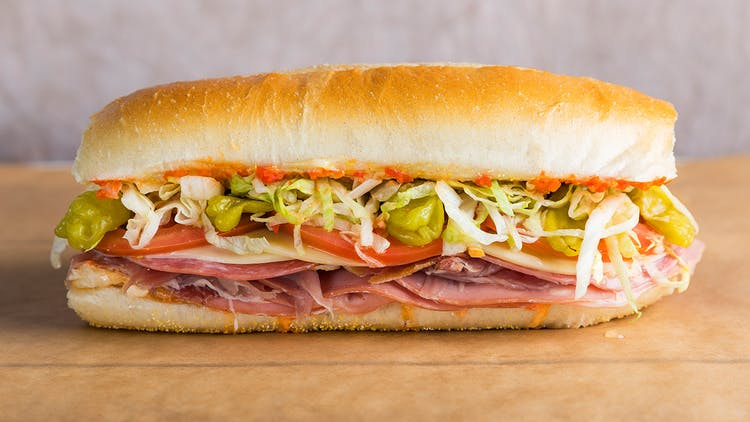

Italian Sub Sandwich Recipe

Description
Loaded with the salty cured meats that sandwich dreams are made of and accompanied by all of the right accoutrements, this Italian hoagie roll from Curtis Stone's Gwen in L.A. is pretty much our ideal lunch. The garlicky pickled cherry pepper spread mixes with the mayonnaise to create a creamy, sweet and rich sensation with every bite.
Ingredients
For the Pickled Cherry Pepper Spread:
- 1 tablespoon white wine vinegar
- 1 teaspoon sugar
- 1 garlic clove
- 6 (¼ cup) pickled cherry peppers
For the Red Wine Vinaigrette:
- 2 tablespoons red wine vinegar
- ½ tablespoon parsley leaves, finely chopped
- ½ tablespoon Dijon mustard
- ½ teaspoon thyme leaves, finely chopped
- 6 tablespoons olive oil
- Kosher salt and freshly ground black pepper, to taste
For the Italian Hoagie Sandwich:
- 3 slices (1½ ounces) mortadella
- 3 slices (1½ ounces) prosciutto di Parma
- 3 slices (1½ ounces) provolone cheese
- 2 slices (6 ounces) beefsteak tomato
Directions
- Preheat the oven too 400º.
- Make the pickled cherry pepper spread: In the base of a small food processor, add all of the ingredients. Pulse the mixture a few times until everything is puréed to a chunky consistency. Transfer the mixture to a small bowl and reserve for later.
- Make the red wine vinaigrette: In a medium bowl, combine all of the ingredients, except for the olive oil. Slowly stream in the olive oil, whisking constantly to ensure that the dressing emulsifies. Season the mixture with salt and pepper; set aside for later.
- Assemble the sandwich: On a sheet pan, toast the hoagie roll for 5 minutes. Slice the roll lengthwise without going all the way through. Open the roll and spread the mayonnaise evenly on the top and bottom layers, followed by the pickled cherry pepper spread. Shingle the salami across the bottom half, followed by the mortadella, prosciutto, provolone and tomatoes. Add the pepperoncini; sprinkle with the parsley, oregano and rosemary; and spread the iceberg lettuce across the top. Drizzle with the red wine vinaigrette, then season with salt and pepper. Slice in half and serve right away.